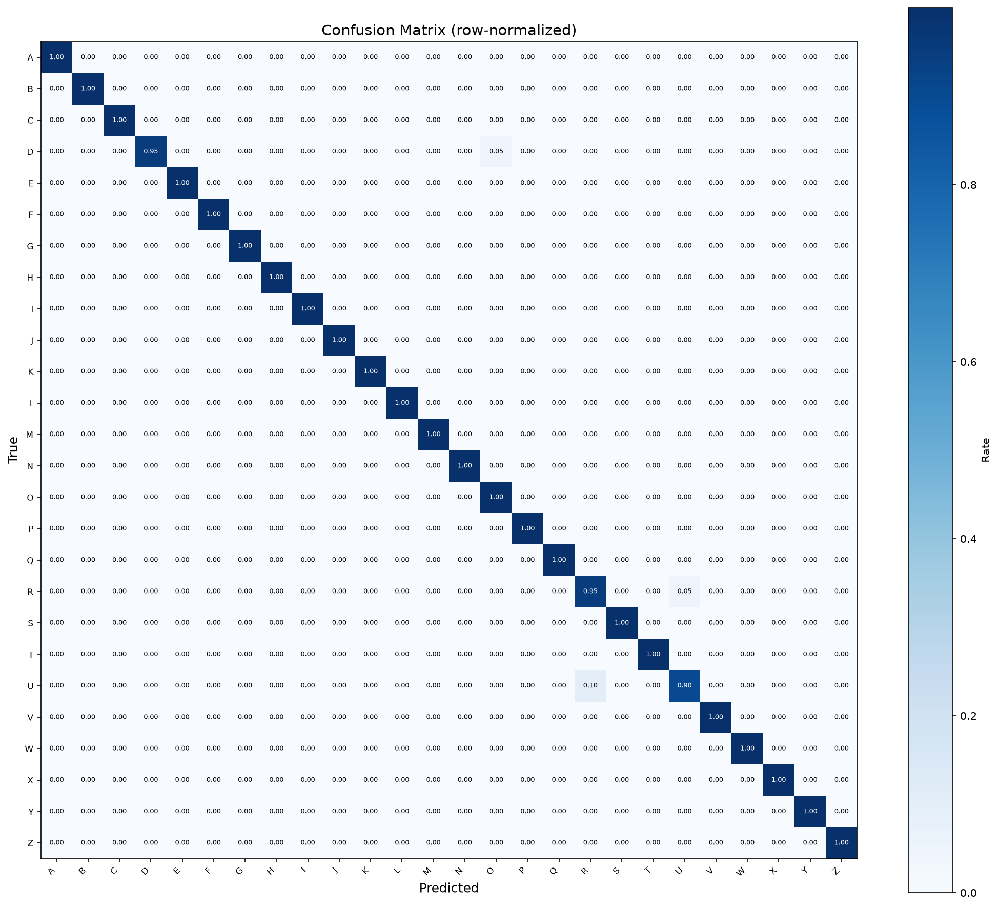

Hands become
language.
A real-time, local ASL alphabet detector that turns 21 hand landmarks into a prediction with a compact PyTorch Transformer.
Geometry first.
Attention second.
The runtime strips away backgrounds, lighting, and skin tone. The classifier sees only normalized hand geometry.
- 01
Camera
A webcam frame stays on the local machine.
- 02
MediaPipe
Detects one hand and extracts 21 three-dimensional landmarks.
- 03
Normalize
Centers coordinates on the wrist and removes scale.
- 04
Transformer
Attention learns relationships among finger joints.
- 05
Predict
Returns an A–Z label, confidence, and smoothed video result.
Measured, not estimated.
The final checkpoint was selected on validation loss, then evaluated once on a held-out test split. A fixed seed makes the split reproducible.
- Test accuracy
- 99.2%
- Best epoch
- 45
- Test loss
- 0.1060

Your camera.
Your machine.
The interactive demo runs locally with Streamlit. No frames are uploaded and no inference server is required.
# install
uv sync --extra dev
# launch the interface
uv run streamlit run src/ui/streamlit_app.py
# or use the low-overhead webcam loop
uv run python -m src.inference.realtimeWhat this model does not claim.
Static signs only. It classifies isolated frames, not continuous sign language or sentences.
J and Z are constrained. Their full ASL forms involve motion that a single-frame representation cannot capture.
One hand. The current pipeline intentionally classifies the first detected hand.